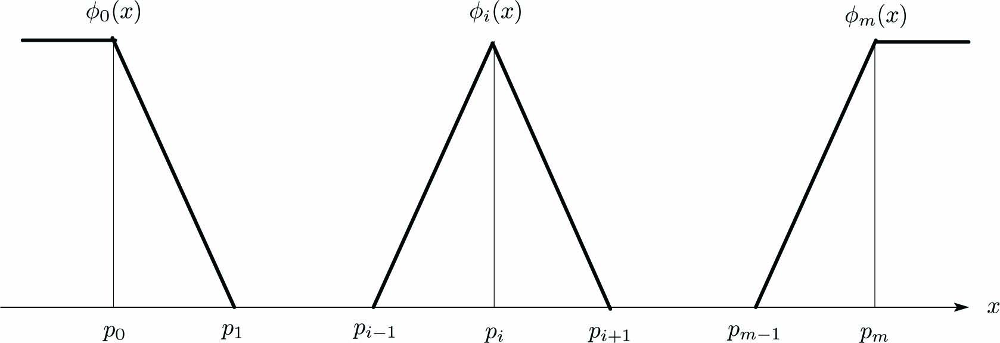

まず、長さ\(d\)の領域を\(m\)個の有限要素に分割し、 \(m+1\)個の有限要素のつなぎ目(節)の位置を\(x=p_i\)として、 節\(p_i\)における基底関数\(\phi_i(x)~~(i=0\cdots m+1)\)を次式で定義します。
\(i=0\)
\begin{align} \left. \begin{array}{@{\,}rl} \phi_{0}(x)&=~1&~(x-p_0 < 0),\\ \phi_{0}(x)&=~\frac{p_1-x}{\Delta d}&~(0 < x-p_0 < \Delta d). \end{array} \right\} \label{eq:BaseFunc_1} \end{align}\(i=1,\cdots,m\)
\begin{align} \left. \begin{array}{@{\,}rll} \phi_{i}(x)&=~\frac{x-p_{i-1}}{\Delta d}&~(-\Delta d < x-p_i < 0),\\ \phi_{i}(x)&=~\frac{p_{i+1}-x}{\Delta d}&~(0 < x-p_i < \Delta d). \end{array} \right\} \label{eq:BaseFunc} \end{align}\(i=m+1\)
\begin{align} \left. \begin{array}{@{\,}rl} \phi_{m}(x)&=~\frac{x-p_{i+1}}{\Delta d}&~(-\Delta d < x-p_m < 0),\\ \phi_{m}(x)&=~1&~(0 < x-p_m). \end{array} \right\} \label{eq:BaseFunc_m} \end{align}基底関数\eqref{eq:BaseFunc_1}～\eqref{eq:BaseFunc_m}をグラフで表現すると次の図になります。
\(m+1\)個の有限要素の節\(x=p_i\)に基底関数\(\phi_i(x)~~(i=0\cdots m+1)\)を配置します。

基底関数\(\phi_i(x)\)を用いて次式の\(\hat f(x)\)で有限要素近似できます。
\begin{align} \hat f(x) = \sum_{i=1}^n w_i\phi_i(x) \label{eq:ApproXFunc} \end{align}\(\phi_i(p_i)=1\)なので、基底関数\(\phi_i(x)\)の荷重\(w_i=f(p_i)\)になります。